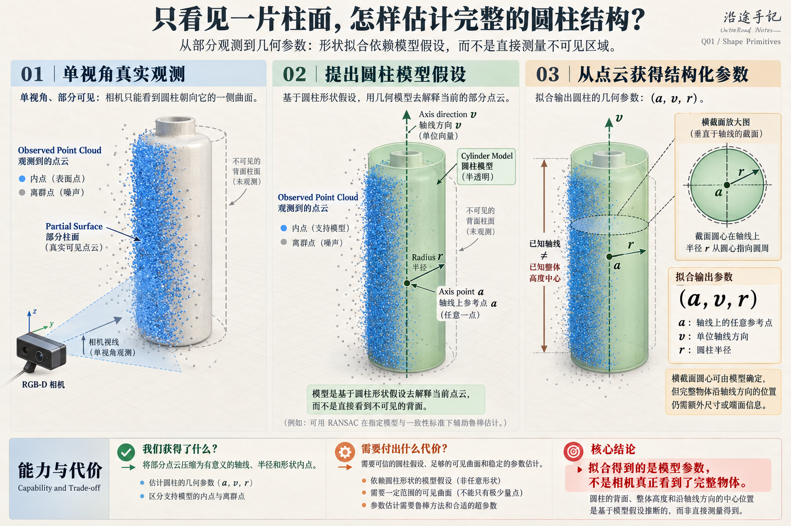
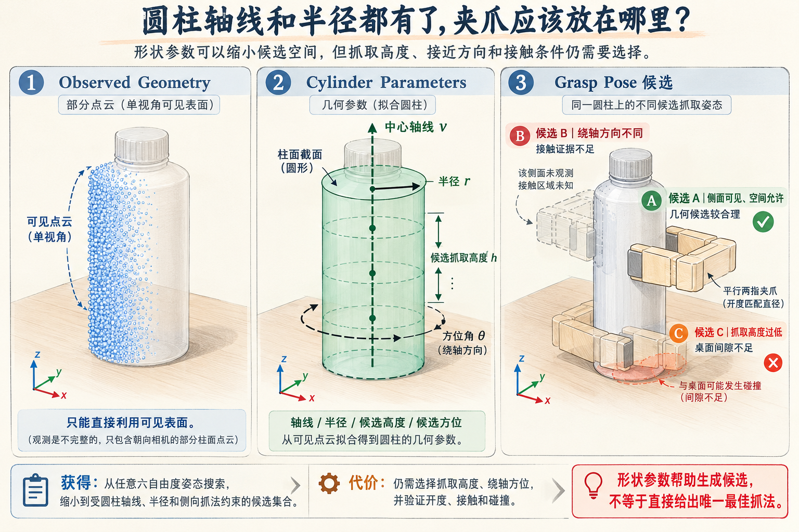
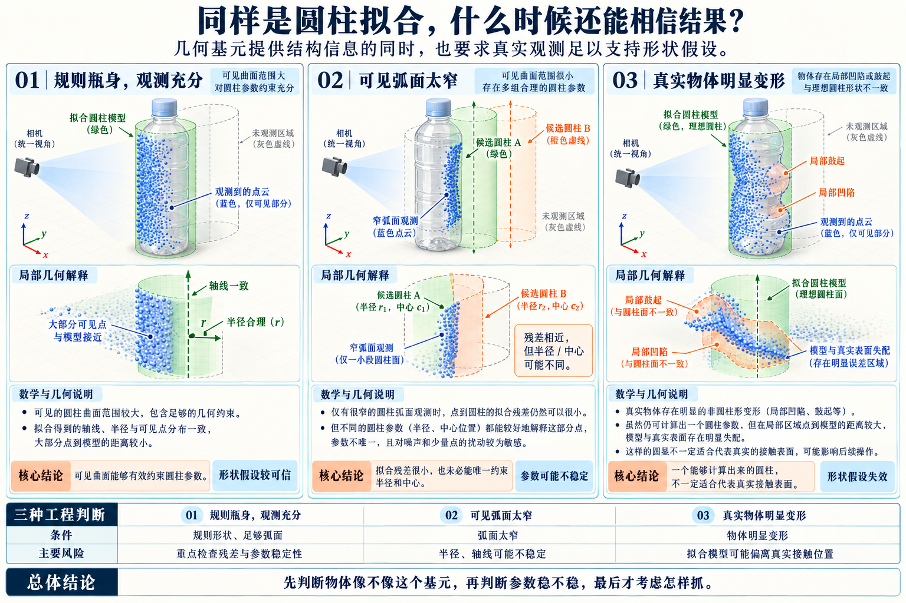

1981
Fischler & Bolles · RANSAC
Random Sample Consensus
提出随机假设—一致性验证的鲁棒估计机制，可与不同参数化模型结合。它并不专门等价于圆柱拟合。
获得的能力在离群点存在时仍可能估计受数据支持的几何模型。
代价与边界依赖模型、内点阈值和足够多的有效数据；高一致性不保证形状假设正确。
形状基元如何真正进入抓取？从 Miller 2003、Efficient RANSAC 到 PCL 圆柱拟合，关注表示、参数估计、候选构造之间的职责，以及它们各自承担的假设。
一个规则瓶子的点云不完整，但依然可能看到稳定的弧面。基元拟合用少量参数解释这些点，抓取规则再利用这些参数缩小候选空间。需要把“形状表示”、“参数估计”和“抓取构造”拆开。
圆柱、盒体、球或圆锥等参数化形状，描述我们愿意相信的几何结构。
根据点云与法线，估计轴线、半径、平面、尺寸和对应内点。
依据基元参数、夹爪几何与预定抓法生成姿态并检验。
不依赖实例 CAD，仍然可能选择一个通用圆柱或盒体模型。它的价值来自对形状的合理简化，代价也正是“物体必须足够像这个形状”。
三项工作分属估计机制、抓取规划与三维基元检测，不是线性取代关系。每一项都要区分原论文的输入条件与当前单视角抓取项目的迁移方式。
提出随机假设—一致性验证的鲁棒估计机制，可与不同参数化模型结合。它并不专门等价于圆柱拟合。
用球、圆柱、盒体等形状基元描述对象，通过预抓取规则提出手部配置，再交给 GraspIt! 仿真测试与评价。重点是形状表示如何驱动抓取候选。
从无序点云中自动识别和分解基本几何形状，以多个形状解释点集的一部分。它着眼于形状提取，本身不负责选择夹爪姿态。
以预定侧向抓取的瓶子为例：选择圆柱不是因为点云自动告诉我们“这是瓶子”，而是因为局部弧面和任务需求支持这种近似模型。若模型成立，可以把大量点压缩为轴线、半径、内点与拟合残差。
a 是轴线上某个参考点，v 是单位方向。对理想无限圆柱，沿轴线移动 a 不改变同一个圆柱；轴向“物体中心”仍要靠端面、长度或抓取高度等额外信息定义。
例如 PCL 的 Cylinder Model Segmentation 官方示例依次使用范围过滤、法线估计、桌面平面分割、圆柱分割。这提供了可靠的工程学习入口，但官方也提醒拟合会受点云噪声影响。
images/q01-shape-primitives-fig-01-partial-cylinder-fitting.png
圆柱轴线已经给出了两个信息：物体沿哪个方向延伸，以及截面半径大概有多大。但它仍没有指定抓取高度、绕轴的接近方向、夹爪坐标系原点与手指接触位置。这些是抓法约定和其他观测需要补充的条件。
例如对于规则竖立的瓶身侧抓，可选多个绕轴方位作为接近候选，并利用相机已知视点、桌面间隙和夹爪尺寸筛选。这里选择某个径向姿态是任务决定，不是圆柱几何唯一推导出来的“物体朝向”。
images/q01-shape-primitives-fig-02-cylinder-grasp-candidates.png
几何拟合可以很好，抓取方向却不可达；一个候选几何上可以夹住，接触表面也可能不稳定。评估必须覆盖手指开度、接触区域和场景碰撞，而不止看形状残差。
最容易犯的错误，不是圆柱参数估计偏了一点，而是在圆柱假设已不成立时仍沿用它生成抓取。
可见圆柱面充足，拟合半径与轴线一致性好时，基元表示特别高效。
单视角缺背面，弧面很窄时，多个不同圆柱可能解释相似点集。
挤压瓶、软包装、反光玻璃可能让几何模型与真实接触区域错位。
images/q01-shape-primitives-fig-03-shape-assumption-failures.png
应当先确认任务真正需要的几何参数，再判断是否值得引入强形状假设。
| 观测条件 / 任务 | 优先思路 | 获得的能力 | 必须支付的代价 |
|---|---|---|---|
| 规则瓶身、足够可见弧面 | 圆柱拟合 | 轴线和半径便于生成侧抓候选 | 依赖柱面完整度与半径假设 |
| 规则盒体且平面明显 | 平面/边线与盒体约束 | 结构边界和抓取方向清晰 | 角点缺失与多面分离可能不稳定 |
| 只需某一小块稳定接触面 | 局部法线/平面 | 不必推断完整物体 | 仍需补足夹爪方向与接触位置 |
| 物体变形明显或贴地 | 局部接触候选 | 更贴近可见局部抓法 | 接触、碰撞与未知区域风险更高 |
| 大量离群点但基元仍合理 | 基元模型 + 鲁棒估计 | 寻找一致支持的模型参数 | 内点阈值、形状假设和稳定性验证 |
如果只需抓取点和一个局部法线，完整圆柱拟合可能反而增加误差；如果需要稳定轴线和径向尺度，圆柱参数则可能很划算。
PCL 官方 Cylinder Model Segmentation 是可跟着复现的里程碑工程案例。本节只保留接口方向，具体参数必须根据深度单位、点云密度与目标尺寸调整。
// 仅演示职责分层；cloud / normals / indices 等须自行准备
pcl::SACSegmentationFromNormals<pcl::PointXYZ, pcl::Normal> seg;
seg.setModelType(pcl::SACMODEL_CYLINDER); // 形状假设
seg.setMethodType(pcl::SAC_RANSAC); // 估计机制
seg.setNormalDistanceWeight(0.1); // 调节法线残差权重
seg.setMaxIterations(10000); // 仅示例值
seg.setDistanceThreshold(0.05); // 仅示例值；单位同点云
seg.setRadiusLimits(0.0, 0.1); // 仅示例值；单位同点云
seg.setInputCloud(cloud_filtered);
seg.setInputNormals(cloud_normals);
seg.segment(*inliers_cylinder, *coefficients_cylinder);
// 系数和内点 -> 验证 -> 再根据夹爪与任务构造候选以下链接用于把每个重要结论追溯到原始研究或工具文档。不要把原始研究的形状模型输入误写成实时 RGB-D 点云输入。
几何基元利用形状先验，把复杂点云压缩成可解释的少量参数；它帮我们减少搜索，却要求真实物体足够符合这种形状。
以后评估基元路线时，先判断“形状像不像”，再判断“参数稳不稳”，最后才判断“夹爪能不能抓”。